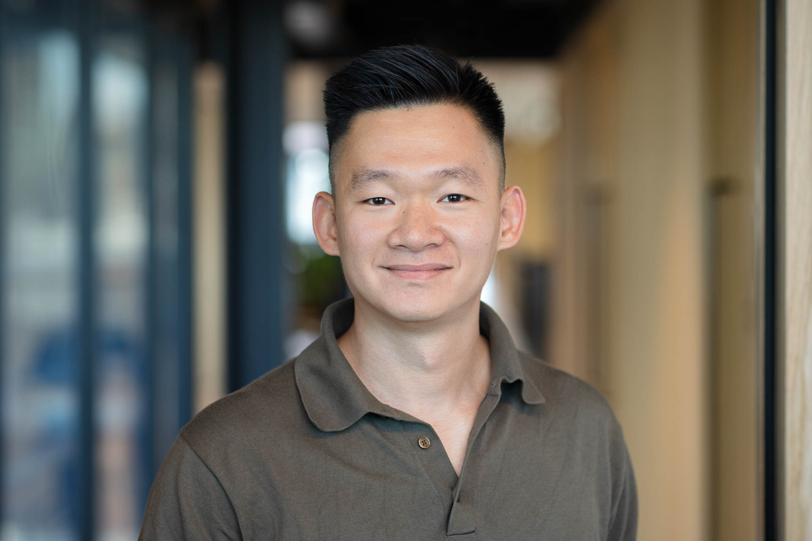
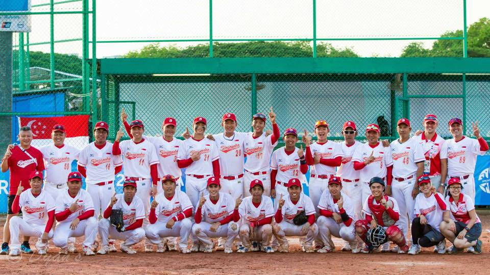
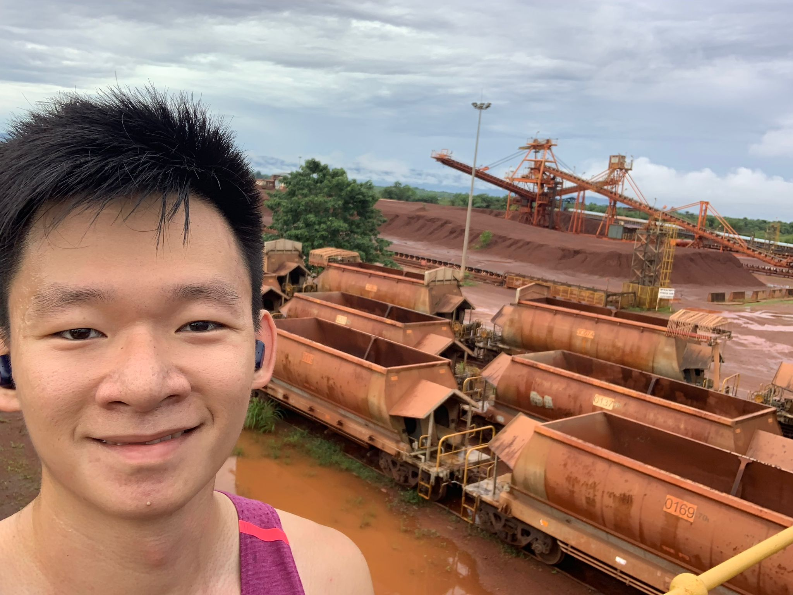

National record holder. Never strikes out twice.
I grew up in Singapore, the eldest of three in a family where my parents worked seven days a week and everyone pulled their weight. From an early age I learned that effort is just what you do, not something you get credit for.
I played softball competitively through school and university, eventually representing Singapore at the 2015 Southeast Asian Games. I almost did not make the squad. Got cut, then made it back through a training camp in Japan by deciding I had nothing to lose. My whole family was in the stands.

Singapore national softball team, SEA Games 2015
Sport taught me more about resilience and team dynamics than any classroom did, and that carried into everything that came after.
My career started in restructuring and insolvency at Borrelli Walsh, where I spent three years working on distressed companies across Southeast Asia. Real work, real stakes, and a lot of learning by doing.

On site in Sierra Leone, 2019
From there I moved into a private equity operator role, then joined a global management consulting firm in Singapore in 2021 as part of the transformation and restructuring practice.
Somewhere along the way, I started asking harder questions. Not about work, but about what I actually wanted. I got into coaching, first as a client, then trained as a practitioner, earning my ICF accreditation in 2025.
Around the same time, AI started showing up in ways I could not ignore. I am not a developer. I am a finance and accounting trained person who decided to figure it out anyway. I have since built multi-agent systems, automated workflows, and a personal operating system that runs my own thinking. No technical background required. Just clarity and a willingness to start.
I moved to London in 2024. I now lead AI commercial activation globally in consulting. I also coach people navigating transitions, career questions, and the quieter questions about what they want their life to look like.
If any of that resonates, I would love to connect.
Since you read this far, you deserve to know. That national record? In 2015, I set the Singapore record for the longest bar slide with a beer can. Here is the proof.
I came to AI not as a technologist but as someone who felt the ground shift and decided to understand what was happening. This is an honest account of that journey, what I tried, what failed, and what changed.
2H 2023
My company ran an early ChatGPT Enterprise pilot and I was one of the users. I started using it for email drafts, ideas, thinking out loud. My first instinct was to treat it like a search engine, asking it everything. It worked, but it was not the best use of it. The shift came when I stopped asking for answers and started asking it to help me think.
1H 2024
Being one of the early users, I was nominated as a Black Belt, someone who helps others adopt the tool. I joined the Global GenAI Enablement Network for the SEA Knowledge team. Then in May I organised a Lunch and Learn for the team, covering use cases across Excel, slide writing, and email drafts. You could sense that people were slow to jump on the train. You need to show them it is doable before they will join you. That is how we approached it.
2H 2024
I relocated from Singapore to London in November. In the middle of that transition, how I used AI shifted. Less about output, more about thinking. Deep research. Getting oriented on a new topic in minutes instead of days. Quiet but consistent progress.
1H 2025
Moved into the tech capability arm of the company, which put me closer to AI and the tools being built around it. One of the first things I did was build custom GPTs for the team, asset lookups, capability finders, affiliation checks. It did not work well. Accuracy was around 80%. The models at the time struggled to read Excel reliably. I figured out why: the model reads a spreadsheet more like JSON than a table. It forms connections based on how you categorise each column, catching the first few well and losing accuracy the further along you go. Not convincing enough for people to change their workflow. I had built the right thing at the wrong time. I was also using AI differently by then, designing agendas, workshop structures, facilitation guides. AI as a thinking partner for how to run a room, not just what to put in a deck.
2H 2025
Somewhere in mid-2025, the capability experienced a step change. I went back to the GPT I had built and abandoned. Fed it the same Excel file. Asked the same questions. Accuracy jumped from around 80% to 95%. The tool I had built months earlier and given up on suddenly worked. That taught me something about AI adoption most people miss: sometimes the tool is not the problem. The model just was not ready. You build early, you wait, and you come back. Then in August, during our annual learning week, I used ChatGPT to learn Python from scratch. I had a specific problem: every week I spent two hours manually splitting revenue numbers across different cuts. By the end of the week I had a script that did it in seconds.
1H 2026
Used Replit to build a pipeline dashboard for commercial reporting, after seeing a colleague build one for their region. Filters by system and region. More engaging than reading through an Excel tracker in a meeting. Then moved to Cursor, building on top of my colleague's orchestration work, not one-off scripts but full workflows. Data extraction, analysis, auto-drafted email, ready for me to review and send. That is where I am now. Not a developer. A non-technical person who can build working tools because I learned to describe what I want clearly enough for the AI to write it.
AI is a creative problem solving tool. The clearer you think, the better it works. Clarity of thought is the skill, not coding.
Adapt, adapt, adapt. New tools, new models, new skills. Whatever you know today will not be enough tomorrow. The people getting ahead are the ones who keep going.
Learn by doing. You will not figure it out by reading about it. Start, make mistakes, adjust.
Not sure where to start? Expose yourself to what others are building. The bar has dropped. Everyone can build with models now. You just need to begin.
Think wider. It started with one use case, then a skill, then an agent, now managing context across systems. Build systems, not one-off tools.
A small collection of things I have built. Not a showcase. More like a record of what I was figuring out at the time.
Personal OS
A multi-agent system that manages my bio, AI journey, portfolio, and coaching practice. Built in Claude Code. This site is part of it.
Pipeline dashboard
A visual pipeline tracker built in Replit with filters by system and region. Replaced the old format of reading through an Excel tracker out loud in meetings. Built on top of a colleague's work and adapted for the SEA team.
Revenue analysis script
A Python script that automates a weekly revenue split across practice areas and regions. Used to take two hours manually in Excel. Now runs in seconds. Built during a learning week with no prior coding experience, just ChatGPT and a problem worth solving.
Team GPTs
Three custom GPTs built for internal team use: asset lookups, capability finders, and affiliation checks. Built in early 2025 when model accuracy was around 80%. Shelved, then revived when the models caught up and accuracy hit 95%. A lesson in building early and coming back.
End-to-end email workflow
A Cursor-built workflow that chains data extraction, analysis, and email drafting into one sequence. Three steps that used to be manual, now run in order. I review the draft, adjust if needed, and send.
bencoachme.lovable.app
My coaching website. Vibe coded in Lovable from a few prompts. First time I shipped something that looked like a real product without writing a single line of code.
I became a coach the way most people do. I needed one first.
For a long time I was good at the job and unclear about the life. I had built a career that looked right on paper but had not stopped to ask whether it was what I actually wanted. Working with a coach changed that. It did not give me answers. It gave me better questions.
I trained formally through an ICF-accredited programme and earned my Associate Certified Coach credential in 2025. I work with people who are navigating transitions, feeling stuck between where they are and where they want to be, or simply trying to be more intentional about how they show up at work and in life.
I am not the kind of coach who gives advice. I ask questions. I listen for what is not being said. I help people move forward on their own terms.
If you are at a fork and want someone to think it through with, I offer a free 60-minute initial conversation. No obligation.
Book a conversation